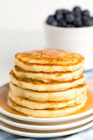

Pancakes



Classic Pancakes
This classic pancake recipe has appeared in every Betty Crocker cookbook since 1950.
Pancakes are a breakfast tradition and are so easy to make. Our pancakes from scratch calls for regular milk,
but we also give a variation to use buttermilk. Top either version with maple syrup or fresh fruit. Be sure to try our new twist,
made with cornmeal, they`re hearty and have a delicious buttery syrup on top.
Recipe
- 1 egg
- 1 cup of all purpose flour
- 1 tbsp sugar
- 3 tsp baking powder
- 1/4 tsp salt
- 3/4 cup milk
- 2 tbsp vegetable oil or melted butter
Directions
- In medium bowl, beat egg with wire whisk until fluffy. Stir in remaining ingredients just until flour is moistened
(batter will be slightly lumpy); do not overmix or pancakes will be tough.
For thinner pancakes, stir in additional 1 to 2 tablespoons milk.
-
Heat griddle or skillet over medium-high heat (375°F). (To test griddle, sprinkle with a few drops of water. If bubbles jump around,
heat is just right.) Brush with vegetable oil if necessary (or spray with cooking spray before heating).
-
For each pancake, pour slightly less than 1/4 cup batter onto griddle. Cook 2 to 3 minutes or until bubbly on top and dry around edges.
Turn; cook other side until golden brown.